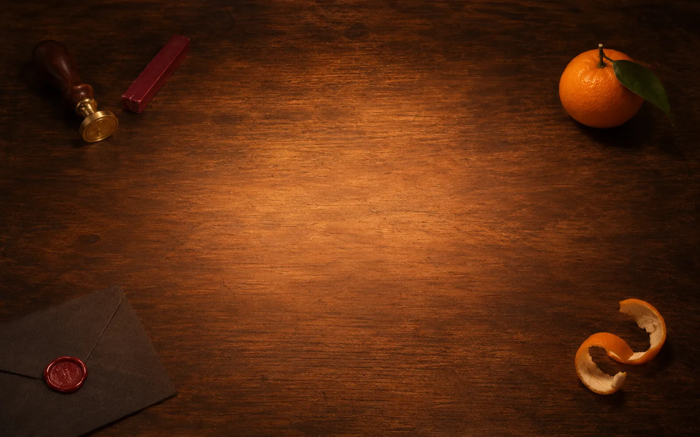

02 / 03 / CHARACTER
A COMPANION IN THE MARGINS
Foca is alive
He notices you, blinks, and gives one shy clap.Primitive 3D plush, pointer-follow eyes, soft breath and a gentle spring.

02 / 03 / CHARACTER
A COMPANION IN THE MARGINS
He notices you, blinks, and gives one shy clap.Primitive 3D plush, pointer-follow eyes, soft breath and a gentle spring.